One of the first nights that Ollie spent at home. Here he is sleeping with Melon, this is back when he still liked her.
Notice his eyes are yellow-ish in this image, almost amber. Kittens are born with blue eyes, they turn amber after they grow to be a few weeks old. Eventually they will change to their natural form.

Notice he still hangs out with Melon.
He loves sleeping with his grandpa
 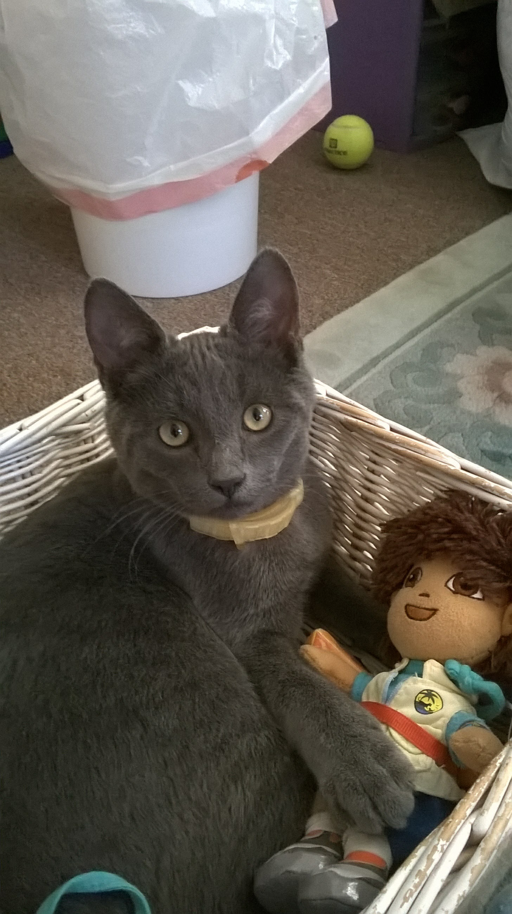
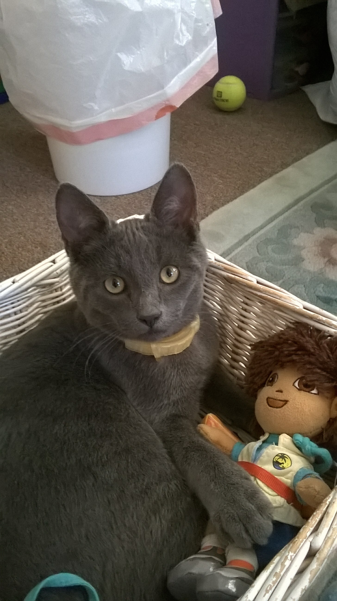
Ollie loves boxes, any kind of box, even those he doesn't fit in.
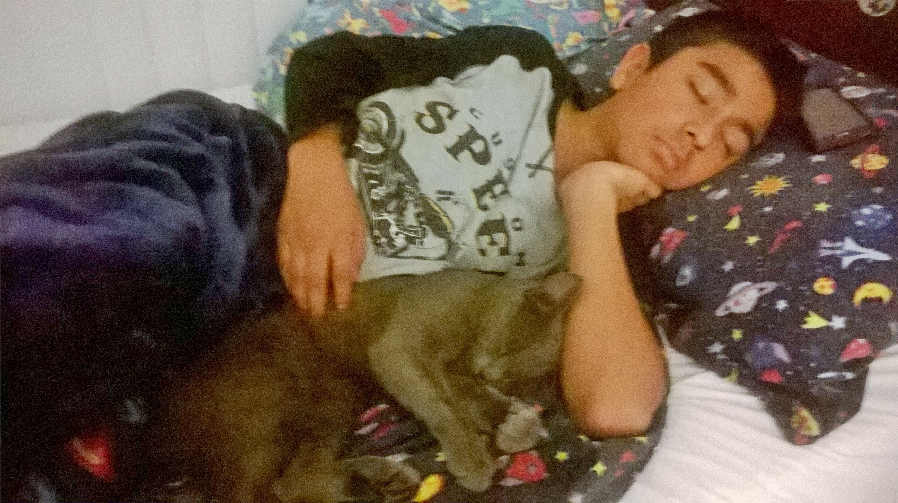 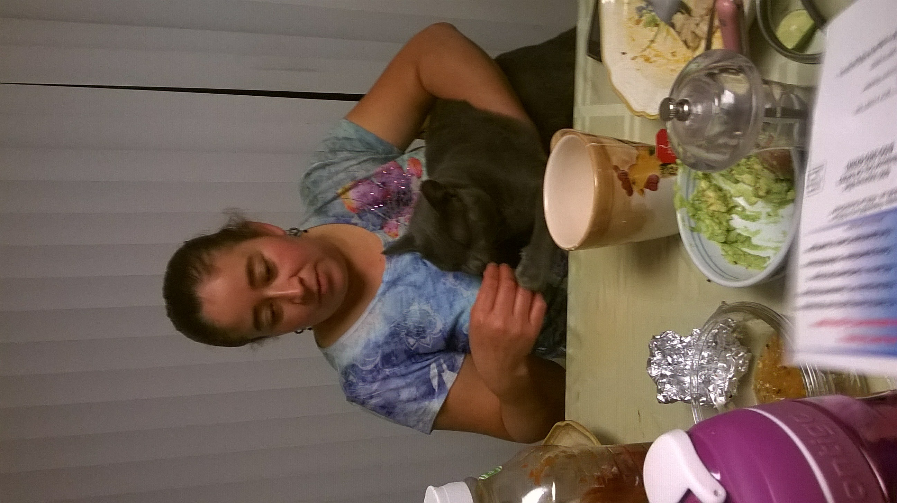 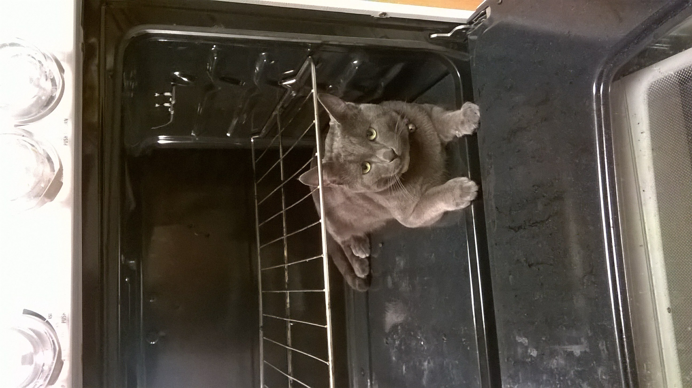 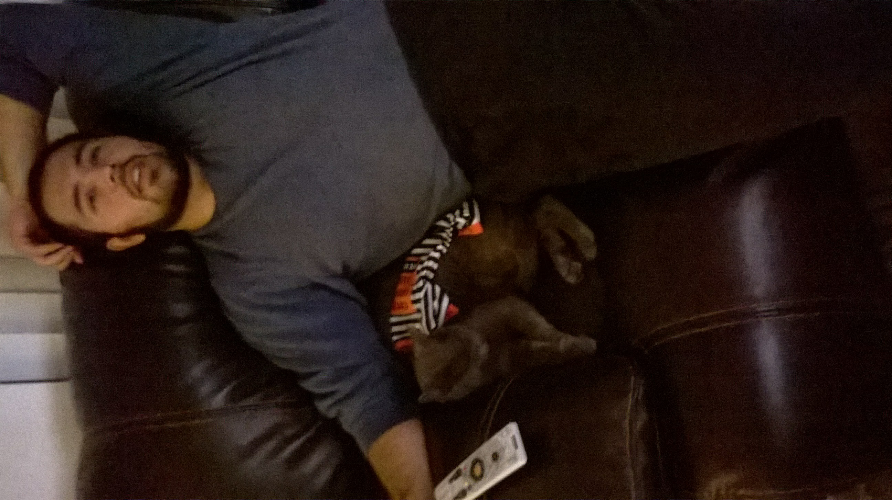 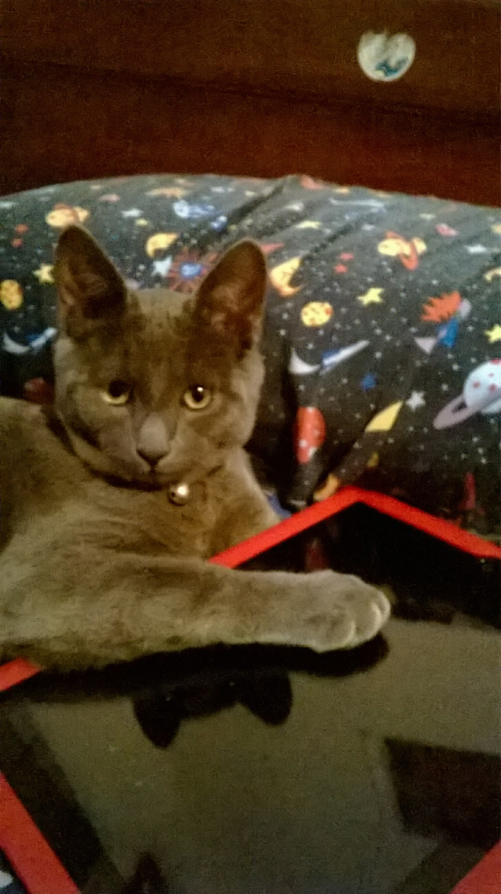 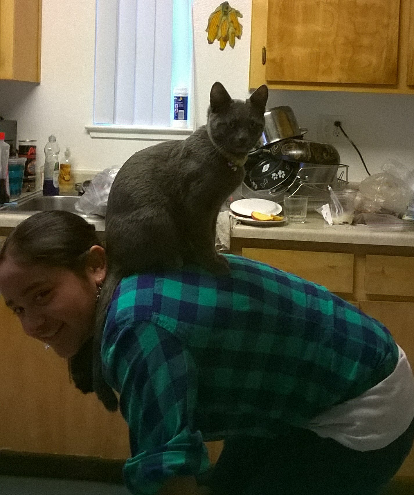 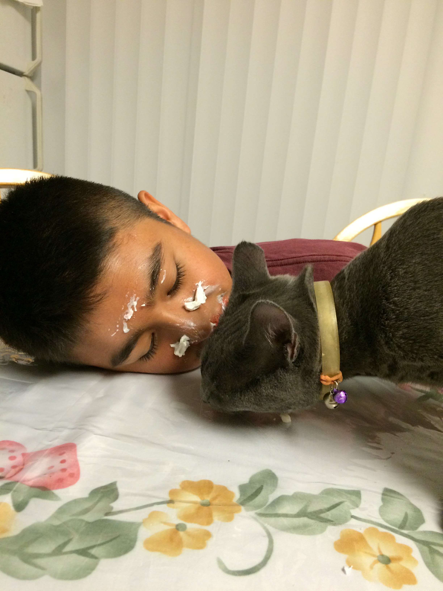Here Ollie becomes acustomed to the family and finds that he likes helping with cooking, eating, tech, and eating.
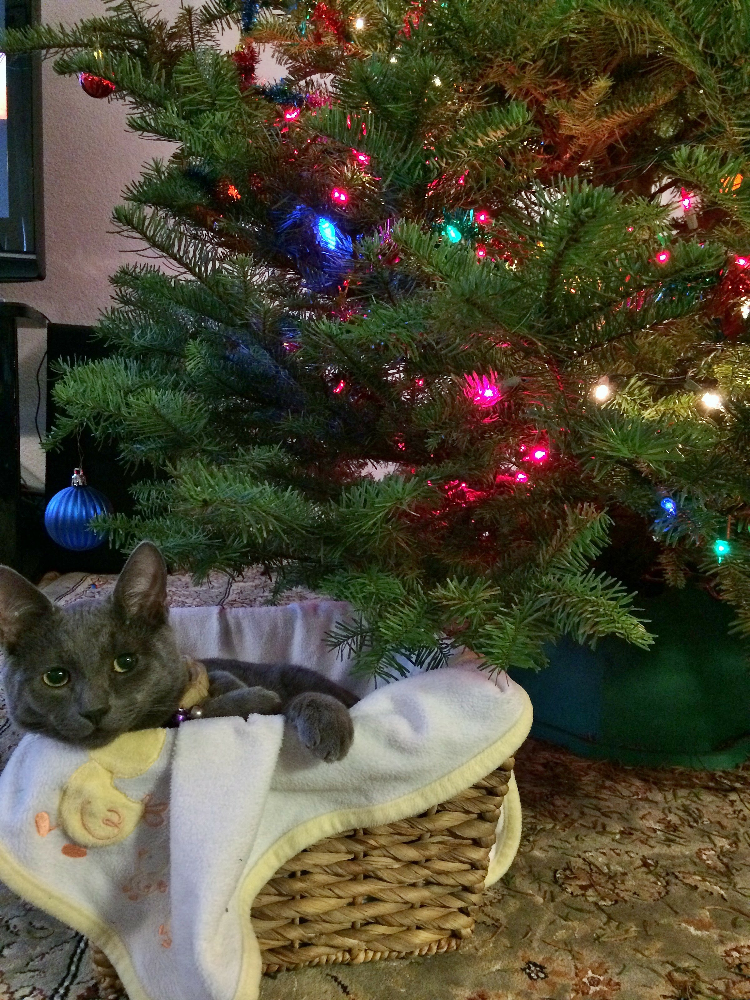Oliver's first Christmas!
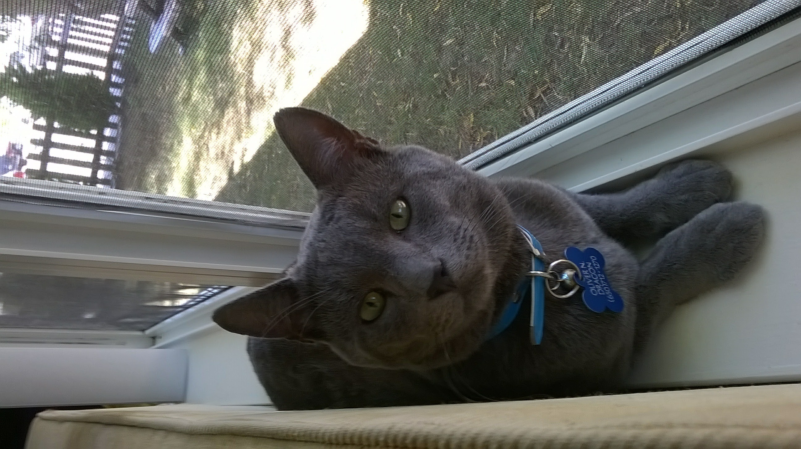Take a look at that shiny new collar, has his name and everything! If only he hadn't lost it immediately...
Also, take a look at those shiny green eyes, looks like he just turned one-year-old!